I. Problem Statement and Motivation
In this study, we will evaluate the performance of biomarkers including cognitive test and subject's medical history in predicting symptoms of dementia or Alzheimer's disease.
II. Introduction
Alzheimer’s is a disease that erodes a patient’s memory, thinking skills and leads to poor judgement, reasoning, planning, language, and inability to perform simple tasks. It is the most common type of dementia affecting more than 5 million Americans. It is ranked as the 6th leading cause of death in the United States
Unfortunately, there is currently no cure for the disease. To find the cure for the disease, the first step is to learn and understand the cause of the disease.
A. Risk Factors
- Age: Studies show that the risk of developing Alzheimer’s increases with age.
- Genetics: The presence of certain genes, e.g.apolipoprotein e4 (APoE4) increase the risk of developing Alzheimer’s.
- Sex: Studies show that women are at a higher risk for developing Alzheimer’s compared to men.
- Past Medical History: Subjects with Obesity, High blood pressure etc. have a higher chance of developing Alzheimer’s
B. Description of Data:
The data for this study was obtained from ADNI (Alzheimer’s Disease Neuroimaging Initiative). The data is maintained at USC’s Laboratory of Neuroimaging at ADNI LONI
The data is grouped into the following categories:
- Assessments
- Biospecimen
- Enrollment
- Genetic
- Imaging
- Study Info
- Subject Characteristics
- Test Data
- _Archive
- _ALL
For this study, we specifically used the following datasets:
- Medical History → Medical History→ Medical History [ADNI1,GO,2]
- Merged Data: Study Info → Data & Databases → Key ADNI tables merged into one table
C. Target Variable
The data target variable for this study is the "DX" column found the on ADNIMERGE.csv dataset
| Target | Abbreviation | Description |
|---|---|---|
| Normal Aging /Cognitively Normal | CN | CN participants are the control subjects in the ADNI study. They show no signs of depression, mild cognitive impairment or dementia |
| Significant Memory Concern | MCI | MC participants score within normal range for cognition (or CDR = 0) but indicate that they have a concern, and exhibit slight forgetfulness. The informant does not equate this as progressive memory impairment nor considers this as consistent forgetfulness. |
| Dementia | Dementia | Dementia |
II. Baseline Model
II. A: Preprocessing of Baseline Data
1. Evaluate Missing Data:
The table below the percentage of missing data from the data set. Observe that the features are numerical.

2: Impute Missing Data:
Impute Missing Data: For the baseline model, we impute missing data of each column with the mean of the column.
3: Handling Longitudinal Data:
The data set contains significant amount of longitudinal data. To address this, we create a new column for each longitudinal feature and record 1 when a change is observed from the baseline model or a zero when a change is not observed.
4. Encode Output: Perform one hot encoding on categorical data: The output data contains 3 classes: ['CN' 'Dementia' 'MCI']. To use the classes in our model, we apply one label encoder on the output. The label transform function transforms the labels from ['CN' 'Dementia' 'MCI'] to ML readable form [0, 1, 2]. We also apply one hot encoding on all categorical features.
| Target | Value |
|---|---|
| CN | 0 |
| Dementia | 1 |
| MCI | 2 |
II. B: Baseline Exploratory Data Analysis: Overall
In order to avoid data leakage from the test into the train set, we split the data into test and train before performing any kind of EDA. Leakage of test data into the train data can lead to what appears to be a better model. However, the model could perform poorly when subjected to a different data set. We want to maximize the amount of training data while allowing for sufficient enough data to be available for testing. For the data that we have, a 75%, 25% train, test split is appropriate.
Pie Chart of Distribution of DX

The charts below show the histogram of DX with the color indicating the distribution of each labelled feature
 |
 |
 |
 |
 |
 |
 |
 |
 |
 |
 |
 |
 |
 |
 |
 |
 |
 |
 |
 |
The charts below the histogram of various features with the color indicating the distribution of DX
| 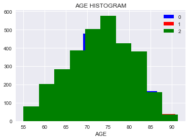 | 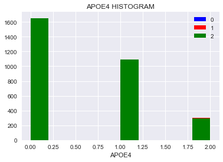 | 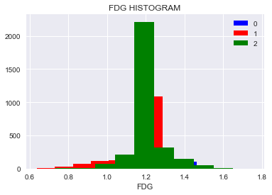 | 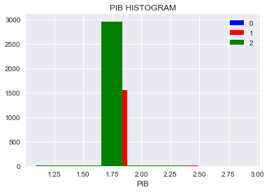 | 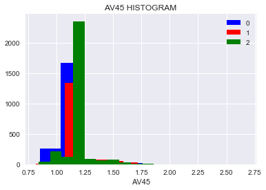 |
| 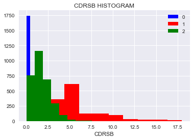 | 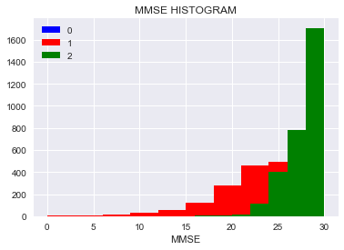 | 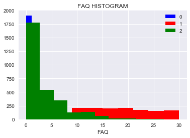 | 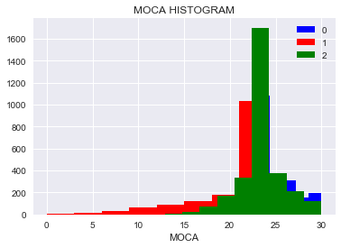 | 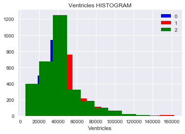 |
| 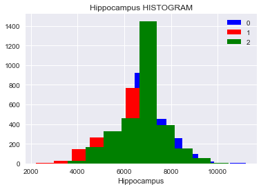 | 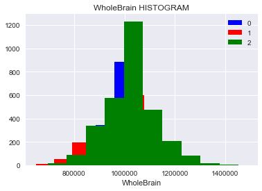 | 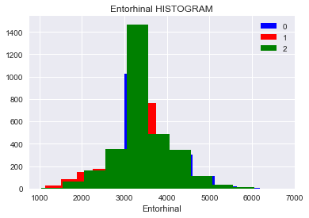 | 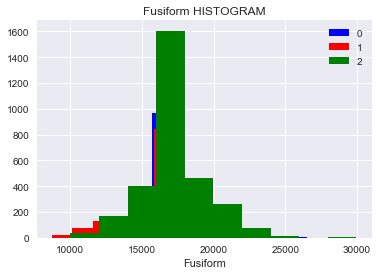 | 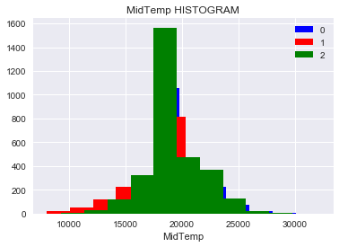 |
Pair plot of some of the features

II. C: Baseline Exploratory Data Analysis: Cognitive Tests
| 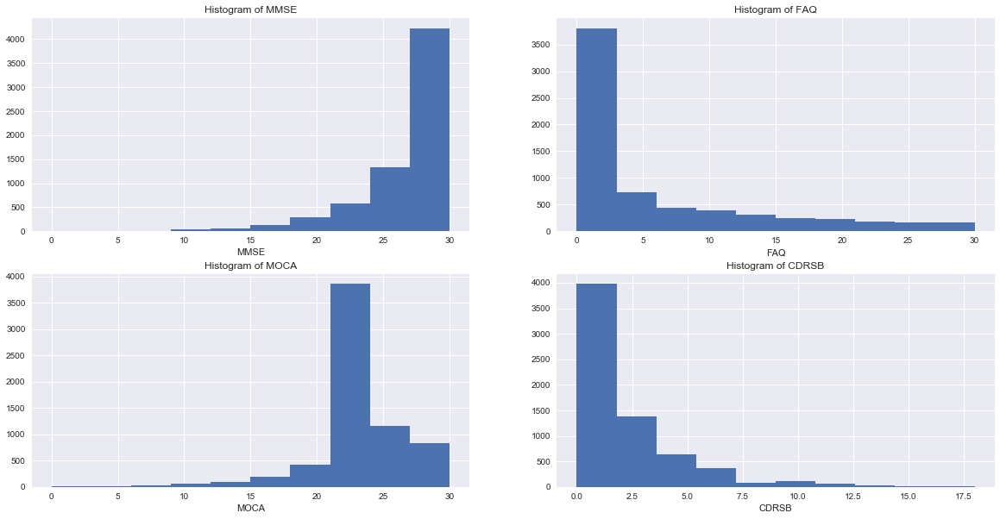 |
From the table below we observe the following:
- MMSE: Subjects in Class 1 tend to score lower on this test. Subjects in Class 2 tend to score higher
- MOCA : There is no obvious scoring difference between the classes
- FAQ : Subjects in Class 1 tend to score higher on this test
- CDRSB : Subjects in Class 2 tend to score higher on this testt
We look at the scatter plots to determine whether any correlation exists between the cognitive tests. We can observe a faint correlation between MMSE and MOCA. Higher MOCA scores tend to also produce higher MMSE scores. Similarly, we observe that Higher MMSE scores tend to correspond to lower CDRSB scores
| 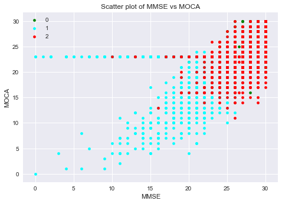 | 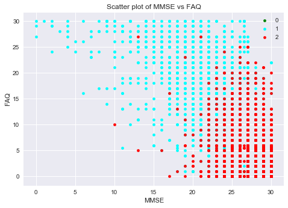 |
| 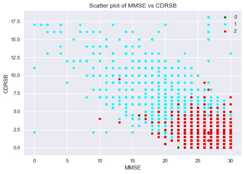 | 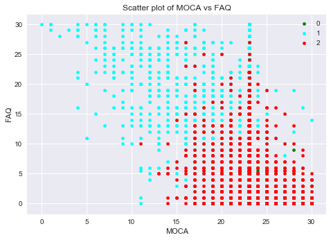 |
| 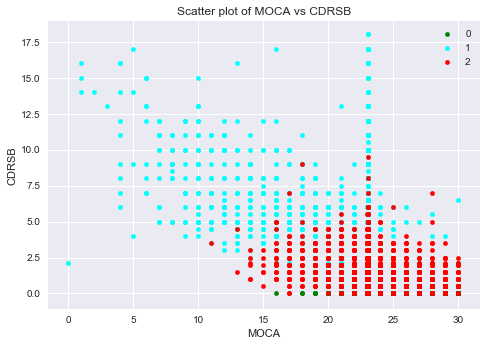 | 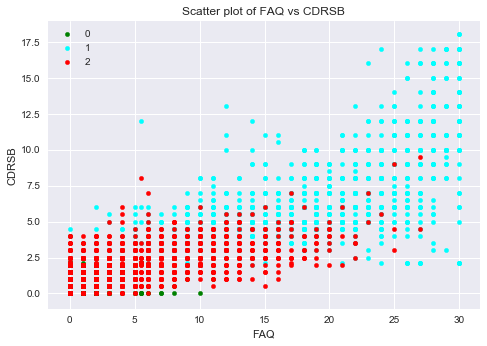 |
Based on the collinearity table , we can conclude that:
- MMSE: Is strongly but negatively collinear with CDRSB and FAQ.
- FAQ: Is strongly collinear with CDRSB and negatively with MMSE
- MOCA: has the least collinearity
- CDRSB: Is strongly collinear with FAQ and negatively with MMSE
| 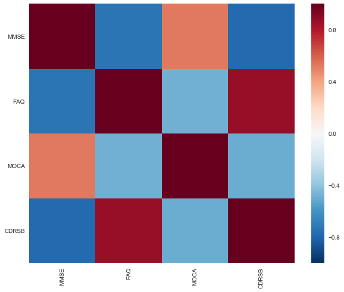 |
II. D: Baseline : Using Single Cognitive Test to determine Cognitive State
We will evaluate how well each cognitive test performs. Then we will evaluate how they perform as a group
1: Standardize the data: Standardize the data to eliminate wide ranges and center the data around mean of zero.
We fit the cognitive tests to the following models and obtained the following scores:
Score Table
| 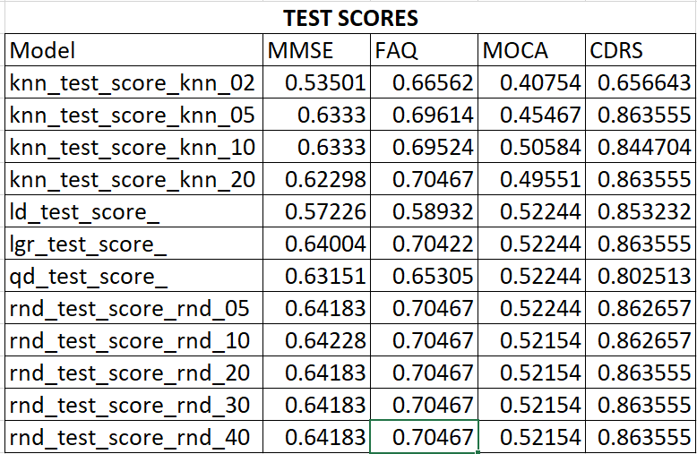 |
| 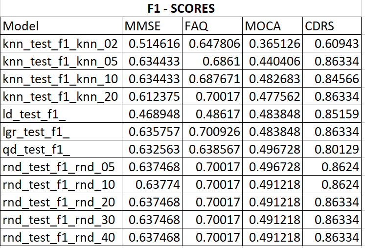 |
| 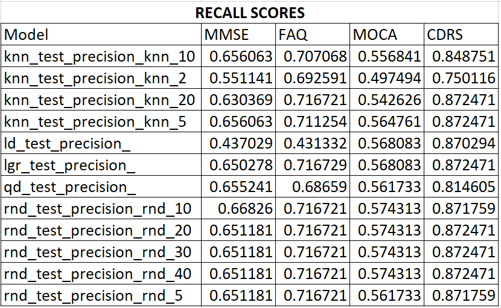 |
In all the models, CDRS has the best score at 0.863555 and F1 Score of 0.863338. Random Forrest with n_estimators = 10 also performed better than the other models. In all cases, k nearest neighbor performed very poorly.. Beyond n_estimators =10, additional trees did not provide any significance increase in performance.
II. D: Baseline : Using All Cognitive Tests to determine Cognitive State
Score Table
| 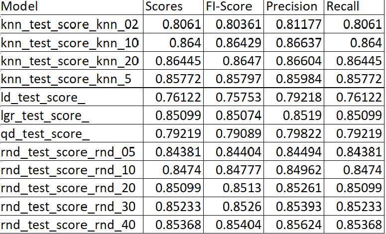 |
Random Forrest with n_estimators = 20 produced the highest score at 0.864698. Because the data is slightly unbalanced, examining f1-score is important because f1-score takes into acccount both precision and recall. Random forest had a F1-Score of 0.912271.
III. A: Using ADNI MERGE to determine Cognitive State
Random Forrest with n_estimators = 20 produced the highest score at 0.912029, FI-Score, 0.912271, precision = 0.913245 and recall 0.912029. The scores have improved over the values from the other baselines.
Score Table
| 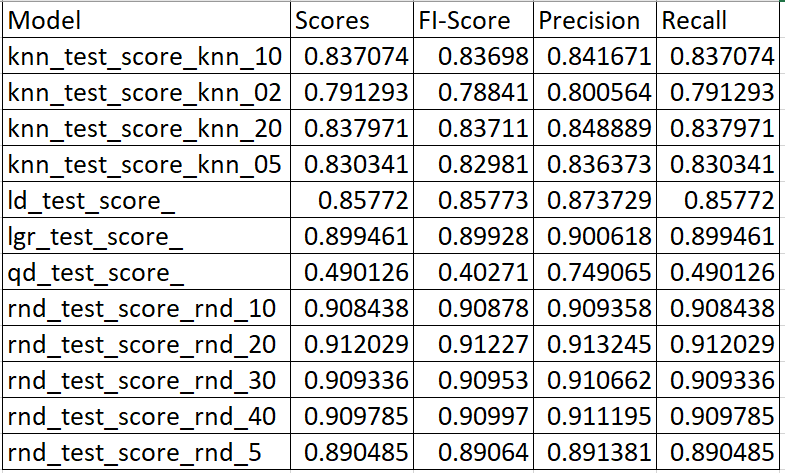 |
IV. A: Using ADNI MERGE, cognitive scores and medical history to determine Cognitive State
In this section, we put it all together by combining the cognitive tests, the adnimerge data and medical history evaluate prediction capability.
1. Merge and Evaluate Missing Data:
Recognizing that RID is a common key in both files, we merge the adnimerge file with the medical history data set. This merge produces a bigger dataset that contains new null fields.
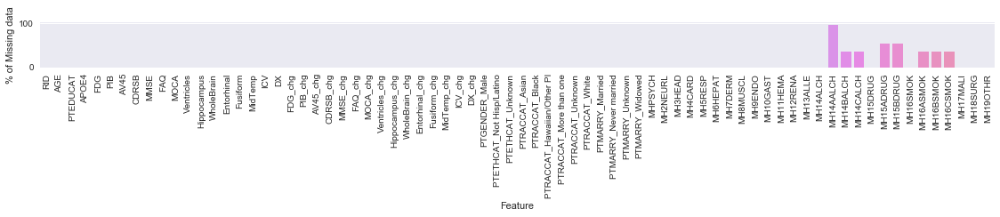
2: Impute Missing Data:
Impute Missing Data: For the baseline model, we impute missing data of each column with the mean of the column. Future possibility it to consider other complex models instead of using the mean.
3. Encode Output: The medical history data contains binary data, so no additional encoding is needed
4. Final Results:
We observed again that Random Forrest continues to have the highest accuracy, f1-score and recall score. The addition of the medical history improved the performance of the model but the increase was very marginal.
Score Table
| 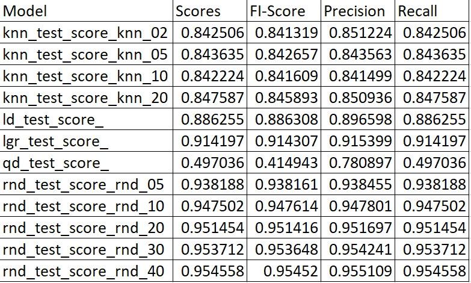 |
Summary
We demonstrated that demographic information, cognitive and medical history improved the performance of our model in predicting the cognitive state of a patient. Careful selection and understanding of features should be made to prevent collinearity. In addition, proper handling of longitudinal data is important to prevent large variance in perfomance. We also evaluated the observed that random forests outperformed the other models(LDA, QDA, Logistical Regression) in all cases for this data set.
Factors that warrant additional study
- Longitudinal Data: The data that we used was collected at different time points. A more in-depth analysis of longitudinal effects is therefore necessary.
- Patient Participation: At different timepoints, some patients either did not participate or when they did, incomplete data was collected. This situation leads to significance being given to patient who participate and whose data are complete. The sample data is therefore not a true representative of the entire population.
- Race: The participants in the study overwhelmingly identify as white and therefore do not necessarily represent a true sample of the Alzheimer’s population. Perhaps the assessments, genetics and medical history would yield different results for a different ethnicity. Further, this study is limited to Americans and perhaps a more causality inference study should be examined. Lastly, no objective criterial is provided to identify a person as belonging to one or another.
Credits and References
- About Alzheimers: https://www.nia.nih.gov/health/alzheimers
- Target Variable Description: http://adni.loni.usc.edu/study-design/background-rationale/
- Longitudinal Data: https://hsc.unm.edu/research/ctsc/Docs/longitudinal.pdf